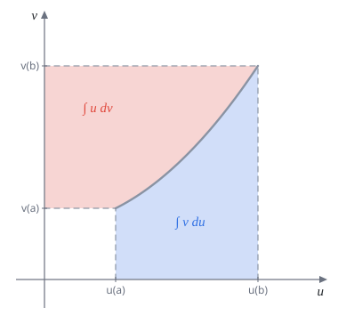
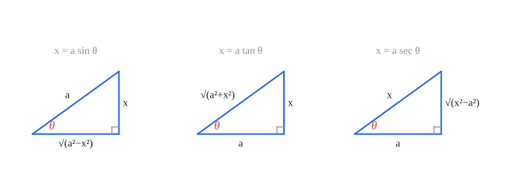

Week 13 積分招式三與四：分部積分、三角代換
AP Calculus I（115 學年）Lecture Note 13 教學與題解
講義筆誤p.109 最後一題：方程 $2^{y/2}-y=x$ 在 $x\in[0,2026]$ 上的解並不唯一（$x=0$ 時 $y=2$、$y=4$ 都是解）。講義答案對應的是 $y\ge4$ 那一支（函數在那裡遞增），題目應補上 $f(x)\ge4$ 之類的條件。見題 10。
Week 11 的變數變換是連鎖律倒過來。這週的兩招一樣是「把微分公式倒過來用」：
- 分部積分（integration by parts，IBP）是乘法律倒過來，專門處理「兩種不同函數相乘」，例如 $xe^x$、$x\sin x$、$\ln x$。
- 三角代換是一種特別的變數變換，用 $\sin^2+\cos^2=1$ 之類的恆等式把 $\sqrt{a^2-x^2}$ 這種根號拆掉。
13.1 積分招式三：分部積分
乘法律說 $(uv)'=u'v+uv'$。兩邊積分再移項：
定理 13.1.1（IBP）設 $u(x)$、$v(x)$ 可微，則
$$\int u(x)v'(x)\,dx=u(x)v(x)-\int u'(x)v(x)\,dx.$$定積分版本：$\displaystyle\int_a^bu(x)v'(x)\,dx=\big[u(x)v(x)\big]_a^b-\int_a^bu'(x)v(x)\,dx$。
習慣寫成 $\displaystyle\int u\,dv=uv-\int v\,du$。用法是把被積函數拆成兩塊：一塊叫 $u$（等一下要微分），一塊連同 $dx$ 叫 $dv$（等一下要積分）。拆得好，右邊的 $\int v\,du$ 會比原來簡單。
挑選原則：$u$ 選「微分後變簡單」的（$x^n$ 微幾次就沒了、$\ln x$ 微完變 $\frac1x$），$dv$ 選「積得出來而且積完不會變複雜」的（$e^x$、$\sin x$）。

題 1求 $\displaystyle\int x\cdot e^x\,dx$。
$x$ 微分會變成 $1$，$e^x$ 積分不變，所以令 $u=x$、$dv=e^x\,dx$，得 $du=dx$、$v=e^x$：
$$\int xe^x\,dx=xe^x-\int e^x\,dx=xe^x-e^x+C.$$反過來選 $u=e^x$、$dv=x\,dx$ 會得到 $\frac{x^2}2e^x-\int\frac{x^2}2e^x\,dx$，次方越來越高，就是選錯了。
$(x-1)e^x+C$
本節練習
練習 13.1-1求 $\displaystyle\int x\cos x\,dx$。
詳解
令 $u=x$、$dv=\cos x\,dx$，$du=dx$、$v=\sin x$：
$$\int x\cos x\,dx=x\sin x-\int\sin x\,dx=x\sin x+\cos x+C.$$$x\sin x+\cos x+C$
練習 13.1-2求 $\displaystyle\int_0^1xe^{-x}\,dx$。
詳解
令 $u=x$、$dv=e^{-x}\,dx$，$du=dx$、$v=-e^{-x}$：
$$\int_0^1xe^{-x}\,dx=\big[-xe^{-x}\big]_0^1+\int_0^1e^{-x}\,dx=-\frac1e+\big[-e^{-x}\big]_0^1=-\frac1e-\frac1e+1.$$$1-\dfrac2e\approx0.264$
13.2 L-I-A-T-E：誰當 $u$
選 $u$ 的口訣是 LIATE，越前面越優先當 $u$（剩下的當 $dv$）：
- Log：$\ln x$
- Inverse trig：$\tan^{-1}x$、$\sin^{-1}x$
- Algebraic：多項式 $x^n$
- Trig：$\sin x$、$\cos x$
- Exponential：$e^x$
理由：L 和 I 不會直接積分，但微分後變成分式，很好處理；E 和 T 積分很輕鬆，適合放在 $dv$。
13.2.1 A 型：多項式 × 指數或三角
多項式當 $u$，每做一次 IBP 次數降一。次數高時要連做好幾次，用表格法（tabular method）比較不會亂：左欄把 $u$ 一直微分到 $0$，右欄把 $dv$ 一直積分，斜線相乘，符號 $+,-,+,-,\dots$ 交錯。
題 2求 $\displaystyle\int(3x^2+2x)e^{3x}\,dx$。
表格法：
| 符號 | $u$ 一直微分 | $dv$ 一直積分 |
|---|---|---|
| $+$ | $3x^2+2x$ | $e^{3x}$ |
| $-$ | $6x+2$ | $\frac13e^{3x}$ |
| $+$ | $6$ | $\frac19e^{3x}$ |
| $0$ | $\frac1{27}e^{3x}$ |
左欄第 $k$ 列乘右欄第 $k+1$ 列，配上第 $k$ 列的符號：
$$e^{3x}\left[\frac{3x^2+2x}3-\frac{6x+2}9+\frac6{27}\right]=e^{3x}\left[x^2+\frac23x-\frac23x-\frac29+\frac29\right]=x^2e^{3x}.$$驗算：$(x^2e^{3x})'=2xe^{3x}+3x^2e^{3x}$，正是被積函數。
$x^2e^{3x}+C$
13.2.2 L 或 I 型：只有一個函數也能 IBP
$\ln x$、$\tan^{-1}x$ 單獨出現時，把它當 $u$，$dv=dx$（也就是另一塊是 $1$）。微分後變成分式，通常就積得出來。
題 3求 $\displaystyle\int\ln x\,dx$。
令 $u=\ln x$、$dv=dx$，$du=\frac1x\,dx$、$v=x$：
$$\int\ln x\,dx=x\ln x-\int x\cdot\frac1x\,dx=x\ln x-x+C.$$$x\ln x-x+C$（這個結果很常用，值得背）
題 4求 $\displaystyle\int\frac{\ln x}{\sqrt x}\,dx$。
L 優先，令 $u=\ln x$、$dv=x^{-1/2}\,dx$，$du=\frac1x\,dx$、$v=2\sqrt x$：
$$\int\frac{\ln x}{\sqrt x}\,dx=2\sqrt x\ln x-\int2\sqrt x\cdot\frac1x\,dx=2\sqrt x\ln x-\int2x^{-1/2}\,dx=2\sqrt x\ln x-4\sqrt x+C.$$$2\sqrt x\ln x-4\sqrt x+C$
13.2.3 TE 型：三角 × 指數，積兩次繞回來
$e^{ax}\sin bx$ 怎麼微分都不會消失，做兩次 IBP 會再出現原積分 $I$。這時把它當未知數，移項解出 $I$。兩次要選同一類當 $u$（都選三角或都選指數），不然會繞回原點得到 $I=I$。
題 5求 $\displaystyle\int\frac{\sin(4x)}{e^{3x}}\,dx$。
寫成 $I=\int e^{-3x}\sin4x\,dx$。第一次：$u=\sin4x$、$dv=e^{-3x}\,dx$，$v=-\frac13e^{-3x}$：
$$I=-\frac13e^{-3x}\sin4x+\frac43\int e^{-3x}\cos4x\,dx.$$第二次同樣讓三角當 $u$：$u=\cos4x$、$dv=e^{-3x}\,dx$：
$$\int e^{-3x}\cos4x\,dx=-\frac13e^{-3x}\cos4x-\frac43\int e^{-3x}\sin4x\,dx=-\frac13e^{-3x}\cos4x-\frac43I.$$代回：$I=-\frac13e^{-3x}\sin4x-\frac49e^{-3x}\cos4x-\frac{16}9I$，移項 $\frac{25}9I=-\frac19e^{-3x}(3\sin4x+4\cos4x)$。
$-\dfrac{e^{-3x}}{25}\big(3\sin4x+4\cos4x\big)+C$
解題套路算過一次就能記公式：
$$\int e^{ax}\sin bx\,dx=\frac{e^{ax}(a\sin bx-b\cos bx)}{a^2+b^2}+C,\qquad\int e^{ax}\cos bx\,dx=\frac{e^{ax}(a\cos bx+b\sin bx)}{a^2+b^2}+C.$$題 5 是 $a=-3$、$b=4$。忘記符號就微分驗算。
題 6求 $\displaystyle\int e^{3x}\cdot2^x\,dx$。（提示：$2^x=e^{x\ln2}$。）
這題其實不用 IBP。兩個指數合併：$e^{3x}\cdot e^{x\ln2}=e^{(3+\ln2)x}$，所以
$$\int e^{(3+\ln2)x}\,dx=\frac{e^{(3+\ln2)x}}{3+\ln2}+C.$$看到兩個指數相乘，先想能不能合併，不要急著拆 $u$、$dv$。
$\dfrac{2^xe^{3x}}{3+\ln2}+C$
題 7求 $\displaystyle\int_1^2\ln(x^x)\,dx$。
先化簡：$\ln(x^x)=x\ln x$。L 當 $u$：$u=\ln x$、$dv=x\,dx$，$v=\frac{x^2}2$：
$$\int_1^2x\ln x\,dx=\left[\frac{x^2}2\ln x\right]_1^2-\int_1^2\frac x2\,dx=2\ln2-\left[\frac{x^2}4\right]_1^2=2\ln2-\frac34.$$$\ln4-\dfrac34$（與講義相同）
題 8求 $\displaystyle\int_0^1x^2\tan^{-1}x\,dx$。
I 比 A 優先：$u=\tan^{-1}x$、$dv=x^2\,dx$，$du=\frac{dx}{1+x^2}$、$v=\frac{x^3}3$：
$$\int_0^1x^2\tan^{-1}x\,dx=\left[\frac{x^3}3\tan^{-1}x\right]_0^1-\frac13\int_0^1\frac{x^3}{1+x^2}\,dx=\frac\pi{12}-\frac13\int_0^1\frac{x^3}{1+x^2}\,dx.$$長除法：$\frac{x^3}{1+x^2}=x-\frac x{1+x^2}$，積分 $=\left[\frac{x^2}2-\frac12\ln(1+x^2)\right]_0^1=\frac12-\frac{\ln2}2$。
$$\frac\pi{12}-\frac13\left(\frac12-\frac{\ln2}2\right)=\frac\pi{12}-\frac16+\frac{\ln2}6=\frac{\pi-2+2\ln2}{12}.$$$\dfrac1{12}(-2+\pi+\ln4)$（與講義相同）
題 9求 $\displaystyle\int_0^\pi e^x\sin(2x)\,dx$。
套 TE 公式，$a=1$、$b=2$：反導函數 $\frac{e^x(\sin2x-2\cos2x)}5$。（想自己推就照題 5 做兩次 IBP。）
$x=\pi$：$\sin2\pi=0$、$\cos2\pi=1$，值 $-\frac{2e^\pi}5$。$x=0$：值 $-\frac25$。相減：
$$-\frac{2e^\pi}5+\frac25=-\frac25(e^\pi-1).$$$-\dfrac25(e^\pi-1)\approx-8.86$（與講義相同）
題 10設 $y=f(x):[0,2026]\to\mathbb R$ 是 $2^{y/2}-y=x$（$x\in[0,2026]$）的唯一解。用變數變換求 $\displaystyle\int_0^{2026}f(x)\,dx$。
（講義此處條件不足，見頁首筆誤）
$f$ 寫不出公式，但它的反函數很清楚：$x=g(y)=2^{y/2}-y$。所以把積分變數從 $x$ 換成 $y$。
先找上下限。$x=0$：$2^{y/2}=y$，試出 $y=2$、$y=4$ 都對；$x=2026$：試 $y=22$，$2^{11}-22=2048-22=2026$。$g'(y)=\frac{\ln2}2\,2^{y/2}-1$ 在 $y\gt3.06$ 左右才為正，所以 $y\ge4$ 那一支是遞增的，$x$ 從 $0$ 到 $2026$ 對應 $y$ 從 $4$ 到 $22$（講義答案就是這一支）。
換變數。$x=g(y)$，$dx=g'(y)\,dy$，被積函數 $f(x)=y$：
$$\int_0^{2026}f(x)\,dx=\int_4^{22}y\,g'(y)\,dy.$$IBP。$u=y$、$dv=g'(y)\,dy$，$v=g(y)$：
$$=\big[y\,g(y)\big]_4^{22}-\int_4^{22}g(y)\,dy=22\cdot2026-4\cdot0-\int_4^{22}\left(2^{y/2}-y\right)dy.$$$\int2^{y/2}\,dy=\frac{2\cdot2^{y/2}}{\ln2}$，從 $4$ 到 $22$ 是 $\frac{2(2048-4)}{\ln2}=\frac{4088}{\ln2}$；$\int_4^{22}y\,dy=\frac{484-16}2=234$。
$$44572-\frac{4088}{\ln2}+234=44806-\frac{4088}{\ln2}.$$這其實就是 Week 9 反函數的積分 公式 $\int_a^bf=bf(b)-af(a)-\int_{f(a)}^{f(b)}f^{-1}$，這裡用 IBP 把它推了一次。
$44806-\dfrac{4088}{\ln2}\approx38908$（與講義相同）
13.2.4 雜例
題 11求 $\displaystyle\int e^{\sqrt x}\,dx$。
先變數變換去根號：$t=\sqrt x$，$x=t^2$，$dx=2t\,dt$：
$$\int e^{\sqrt x}\,dx=\int2te^t\,dt.$$這就是題 1：$\int te^t\,dt=(t-1)e^t$。所以結果 $2(t-1)e^t+C$，換回 $x$。
$2(\sqrt x-1)e^{\sqrt x}+C$
題 12求 $\displaystyle\int\sec^3x\,dx$。
拆成 $\sec x\cdot\sec^2x$，$\sec^2x$ 積得出來：$u=\sec x$、$dv=\sec^2x\,dx$，$du=\sec x\tan x\,dx$、$v=\tan x$：
$$I=\sec x\tan x-\int\sec x\tan^2x\,dx=\sec x\tan x-\int\sec x(\sec^2x-1)\,dx=\sec x\tan x-I+\int\sec x\,dx.$$又繞回 $I$，移項：$2I=\sec x\tan x+\ln|\sec x+\tan x|$。
$\dfrac12\big(\sec x\tan x+\ln|\sec x+\tan x|\big)+C$（三角代換常用到，值得背）
題 13延伸（特殊技巧）求 $\displaystyle\int_{-1}^1\left(x^2+\frac12\right)e^{x^2}\,dx$。
$\int e^{x^2}\,dx$ 沒有初等反導函數，分開算行不通。技巧是只對 $x^2e^{x^2}$ 那半做 IBP，讓 $\int e^{x^2}$ 自己抵消：
$x^2e^{x^2}=x\cdot xe^{x^2}$，令 $u=x$、$dv=xe^{x^2}\,dx$，$v=\frac12e^{x^2}$：
$$\int x^2e^{x^2}\,dx=\frac12xe^{x^2}-\frac12\int e^{x^2}\,dx.$$所以 $\int\left(x^2+\frac12\right)e^{x^2}\,dx=\frac12xe^{x^2}-\frac12\int e^{x^2}\,dx+\frac12\int e^{x^2}\,dx=\frac12xe^{x^2}+C$。
換個角度：$\left(xe^{x^2}\right)'=e^{x^2}+2x^2e^{x^2}=2\left(x^2+\frac12\right)e^{x^2}$，被積函數剛好是某個乘積的導數。
$$\left[\frac12xe^{x^2}\right]_{-1}^1=\frac e2-\left(-\frac e2\right)=e.$$$e$
題 14求 $\displaystyle\int\frac{x+\sin x}{1+\cos x}\,dx$。（變數變換行不通。提示：$\cos2\theta=2\cos^2\theta-1$。）
用半角：$1+\cos x=2\cos^2\frac x2$，$\sin x=2\sin\frac x2\cos\frac x2$。拆兩項：
$$\frac x{1+\cos x}=\frac x2\sec^2\frac x2,\qquad\frac{\sin x}{1+\cos x}=\frac{2\sin\frac x2\cos\frac x2}{2\cos^2\frac x2}=\tan\frac x2.$$第一項 IBP：$u=x$、$dv=\frac12\sec^2\frac x2\,dx$，$v=\tan\frac x2$：
$$\int\frac x2\sec^2\frac x2\,dx=x\tan\frac x2-\int\tan\frac x2\,dx.$$剩下的 $-\int\tan\frac x2$ 剛好和第二項 $+\int\tan\frac x2$ 抵消，和題 13 同一個招。
$x\tan\dfrac x2+C$
題 15求下列積分。
(a) $\displaystyle\int(3x+x^2)\sin(2x)\,dx$ (b) $\displaystyle\int6\tan^{-1}\left(\frac8x\right)dx$ (c) $\displaystyle\int e^{2x}\cos\left(\frac x4\right)dx$
(d) $\displaystyle\int x^7\sin(2x^4)\,dx$ (e) $\displaystyle\int\tan^{-1}x\,dx$ (f) $\displaystyle\int\cos(\ln x)\,dx$
(g) $\displaystyle\int e^x\left(\frac{x-1}{x^2}\right)dx=\int e^x\left(\frac1x-\frac1{x^2}\right)dx$（提示：考慮 $\int e^x\cdot\frac1x\,dx$。）
(a) 表格法，$u=3x+x^2\to3+2x\to2\to0$，$dv=\sin2x\to-\frac12\cos2x\to-\frac14\sin2x\to\frac18\cos2x$：
$$-\frac{(3x+x^2)\cos2x}2+\frac{(3+2x)\sin2x}4+\frac{2\cos2x}8.$$(b) $u=\tan^{-1}\frac8x$、$dv=dx$。$du=\frac1{1+64/x^2}\cdot\left(-\frac8{x^2}\right)dx=-\frac8{x^2+64}\,dx$：
$$6\left[x\tan^{-1}\frac8x+\int\frac{8x}{x^2+64}\,dx\right]=6x\tan^{-1}\frac8x+24\ln(x^2+64)+C.$$(c) TE 公式 $a=2$、$b=\frac14$，$a^2+b^2=\frac{65}{16}$：$\frac{16}{65}e^{2x}\left(2\cos\frac x4+\frac14\sin\frac x4\right)$。
(d) 先換 $t=x^4$，$dt=4x^3\,dx$，$x^7\,dx=x^4\cdot x^3\,dx=\frac14t\,dt$：$\frac14\int t\sin2t\,dt$。再 IBP：$\int t\sin2t\,dt=-\frac t2\cos2t+\frac14\sin2t$。乘 $\frac14$ 換回 $x$。
(e) $u=\tan^{-1}x$、$dv=dx$：$x\tan^{-1}x-\int\frac x{1+x^2}\,dx=x\tan^{-1}x-\frac12\ln(1+x^2)+C$。
(f) 換 $t=\ln x$，$x=e^t$，$dx=e^t\,dt$：$\int e^t\cos t\,dt=\frac{e^t(\cos t+\sin t)}2$（TE 公式 $a=b=1$），$e^t=x$ 換回。
(g) 對 $\int e^x\cdot\frac1x\,dx$ 做 IBP，$u=\frac1x$、$dv=e^x\,dx$：$\int\frac{e^x}x\,dx=\frac{e^x}x+\int\frac{e^x}{x^2}\,dx$。移項：$\int e^x\left(\frac1x-\frac1{x^2}\right)dx=\frac{e^x}x+C$。$\int\frac{e^x}x$ 本身積不出來，但它在相減中消掉了。一般地，$\int e^x\big(f(x)+f'(x)\big)\,dx=e^xf(x)+C$。
(a) $-\frac{(3x+x^2)\cos2x}2+\frac{(3+2x)\sin2x}4+\frac{\cos2x}4+C$ (b) $6x\tan^{-1}\frac8x+24\ln(x^2+64)+C$
(c) $\frac{32}{65}e^{2x}\cos\frac x4+\frac4{65}e^{2x}\sin\frac x4+C$ (d) $-\frac18x^4\cos(2x^4)+\frac1{16}\sin(2x^4)+C$
(e) $x\tan^{-1}x-\frac12\ln(1+x^2)+C$ (f) $\frac x2\big(\cos(\ln x)+\sin(\ln x)\big)+C$ (g) $\frac{e^x}x+C$（皆與講義相同）
本節練習
練習 13.2-1求 $\displaystyle\int x^2\sin x\,dx$。
詳解
表格法：$u=x^2\to2x\to2\to0$，$dv=\sin x\to-\cos x\to-\sin x\to\cos x$，符號 $+,-,+$：
$$x^2(-\cos x)-2x(-\sin x)+2\cos x.$$$-x^2\cos x+2x\sin x+2\cos x+C$
練習 13.2-2求 $\displaystyle\int x^3\ln x\,dx$。
詳解
L 優先：$u=\ln x$、$dv=x^3\,dx$，$v=\frac{x^4}4$：
$$\frac{x^4}4\ln x-\int\frac{x^4}4\cdot\frac1x\,dx=\frac{x^4}4\ln x-\frac{x^4}{16}+C.$$$\dfrac{x^4\ln x}4-\dfrac{x^4}{16}+C$
練習 13.2-3求 $\displaystyle\int\sin^{-1}x\,dx$。
詳解
$u=\sin^{-1}x$、$dv=dx$，$du=\frac{dx}{\sqrt{1-x^2}}$：
$$x\sin^{-1}x-\int\frac x{\sqrt{1-x^2}}\,dx.$$後面令 $w=1-x^2$，$dw=-2x\,dx$：$\int\frac x{\sqrt{1-x^2}}\,dx=-\frac12\int w^{-1/2}\,dw=-\sqrt{1-x^2}$。
$x\sin^{-1}x+\sqrt{1-x^2}+C$
練習 13.2-4求 $\displaystyle\int_0^{\pi/2}e^x\cos x\,dx$。
詳解
TE 公式 $a=b=1$：反導函數 $\frac{e^x(\cos x+\sin x)}2$。
$x=\frac\pi2$：$\frac{e^{\pi/2}(0+1)}2$；$x=0$：$\frac{1\cdot(1+0)}2$。相減。
$\dfrac{e^{\pi/2}-1}2\approx1.905$
練習 13.2-5求 $\displaystyle\int\sin\sqrt x\,dx$。
詳解
照題 11：$t=\sqrt x$，$dx=2t\,dt$，變成 $2\int t\sin t\,dt$。IBP $u=t$、$dv=\sin t\,dt$：$\int t\sin t\,dt=-t\cos t+\sin t$。
$-2\sqrt x\cos\sqrt x+2\sin\sqrt x+C$
13.3 應用：遞迴公式
被積函數帶一個次方 $n$ 時（$(\ln x)^n$、$\cos^nx$、$x^ne^x$），做一次 IBP 通常會把次方降一或降二，得到 $I_n$ 和 $I_{n-1}$（或 $I_{n-2}$）的關係，叫遞迴公式（reduction formula）。之後只要算最小的 $I_0$、$I_1$，一路往上代。
13.3.1 例：$(\ln x)^n$ 的遞迴公式
題 16令 $I_n=\int(\ln x)^n\,dx$。
(a) 證明 $\displaystyle\int(\ln x)^n\,dx=x(\ln x)^n-n\int(\ln x)^{n-1}\,dx$。
(b) 由此求 $I_3$。
(a) 照題 3 的做法：$u=(\ln x)^n$、$dv=dx$，$du=n(\ln x)^{n-1}\cdot\frac1x\,dx$、$v=x$：
$$I_n=x(\ln x)^n-\int x\cdot n(\ln x)^{n-1}\frac1x\,dx=x(\ln x)^n-nI_{n-1}.$$(b) 從 $I_1=x\ln x-x$（題 3）往上：
$$I_2=x(\ln x)^2-2I_1=x(\ln x)^2-2x\ln x+2x,$$ $$I_3=x(\ln x)^3-3I_2=x(\ln x)^3-3x(\ln x)^2+6x\ln x-6x+C.$$$I_3=x(\ln x)^3-3x(\ln x)^2+6x\ln x-6x+C$
題 17對每個 $n\in\mathbb N\cup\{0\}$，定義 $I_n=\displaystyle\int_1^ex(\ln x)^n\,dx$。
(a) 求 $I_0$、$I_1$。(b) 求 $I_{n+1}$ 與 $I_n$ 的遞迴關係。(c) 求 $I_4$。
(a) $I_0=\int_1^ex\,dx=\frac{e^2-1}2$。$I_1$ 就是題 7 的積分：$\left[\frac{x^2}2\ln x-\frac{x^2}4\right]_1^e=\frac{e^2}2-\frac{e^2}4+\frac14=\frac{e^2+1}4$。
(b) $u=(\ln x)^{n+1}$、$dv=x\,dx$，$du=(n+1)(\ln x)^n\frac1x\,dx$、$v=\frac{x^2}2$：
$$I_{n+1}=\left[\frac{x^2}2(\ln x)^{n+1}\right]_1^e-\frac{n+1}2\int_1^ex(\ln x)^n\,dx=\frac{e^2}2-\frac{n+1}2I_n.$$（$\ln e=1$、$\ln1=0$，所以邊界項只剩 $\frac{e^2}2$。）
(c) 往上代：
$$I_2=\frac{e^2}2-I_1=\frac{e^2-1}4,\quad I_3=\frac{e^2}2-\frac32I_2=\frac{e^2+3}8,\quad I_4=\frac{e^2}2-2I_3=\frac{e^2-3}4.$$檢查：(b) 取 $n=0$ 得 $I_1=\frac{e^2}2-\frac12\cdot\frac{e^2-1}2=\frac{e^2+1}4$，和 (a) 一致。
(a) $I_0=\frac{e^2-1}2$，$I_1=\frac{e^2+1}4$ (b) $I_{n+1}=\frac{e^2}2-\frac{n+1}2I_n$ (c) $I_4=\frac{e^2-3}4\approx1.097$
題 18令 $I_n=\int\cos^nx\,dx$，$n\in\mathbb N$。
(a) 證明 $I_n=\dfrac{\cos^{n-1}x\sin x}n+\dfrac{n-1}nI_{n-2}$。
(b) 求 $\displaystyle\int_0^{\pi/2}\cos^6x\,dx$。
(a) 拆 $\cos^nx=\cos^{n-1}x\cdot\cos x$：$u=\cos^{n-1}x$、$dv=\cos x\,dx$，$du=-(n-1)\cos^{n-2}x\sin x\,dx$、$v=\sin x$：
$$I_n=\cos^{n-1}x\sin x+(n-1)\int\cos^{n-2}x\sin^2x\,dx.$$$\sin^2x=1-\cos^2x$，後面的積分 $=I_{n-2}-I_n$：
$$I_n=\cos^{n-1}x\sin x+(n-1)I_{n-2}-(n-1)I_n\ \Rightarrow\ nI_n=\cos^{n-1}x\sin x+(n-1)I_{n-2}.$$(b) 令 $J_n=\int_0^{\pi/2}\cos^nx\,dx$。邊界項在 $0$（$\sin0=0$）和 $\frac\pi2$（$\cos\frac\pi2=0$）都是 $0$（$n\ge2$），所以 $J_n=\frac{n-1}nJ_{n-2}$，$J_0=\frac\pi2$：
$$J_6=\frac56\cdot\frac34\cdot\frac12\cdot\frac\pi2=\frac{15\pi}{96}=\frac{5\pi}{32}.$$(b) $\dfrac{5\pi}{32}$（與講義相同）
題 19令 $I_n=\int\tan^nx\,dx$，$n\ge2$。
(a) 證明 $I_n=\dfrac{\tan^{n-1}x}{n-1}-I_{n-2}$。
(b) 求 $\displaystyle\int\tan^5x\,dx$。
(a) 這題用不到 IBP，靠 $\tan^2x=\sec^2x-1$：
$$I_n=\int\tan^{n-2}x(\sec^2x-1)\,dx=\int\tan^{n-2}x\sec^2x\,dx-I_{n-2}.$$第一項令 $w=\tan x$，$dw=\sec^2x\,dx$：$\int w^{n-2}\,dw=\frac{w^{n-1}}{n-1}$。
(b) $I_1=\int\tan x\,dx=-\ln|\cos x|$（週十一題 2）。
$$I_3=\frac{\tan^2x}2-I_1=\frac{\tan^2x}2+\ln|\cos x|,\qquad I_5=\frac{\tan^4x}4-I_3=\frac{\tan^4x}4-\frac{\tan^2x}2-\ln|\cos x|+C.$$講義寫成 $\sec$ 的形式：$\tan^2x=\sec^2x-1$ 代入，$\frac{(\sec^2x-1)^2}4-\frac{\sec^2x-1}2=\frac{\sec^4x}4-\sec^2x+\frac34$，常數併進 $C$，兩者一樣。
$\dfrac{\tan^4x}4-\dfrac{\tan^2x}2-\ln|\cos x|+C=\dfrac14\big(\sec^4x-4\sec^2x-4\ln|\cos x|\big)+C$（講義的 $\ln$ 漏了絕對值）
本節練習
練習 13.3-1令 $I_n=\int x^ne^x\,dx$。(a) 證明 $I_n=x^ne^x-nI_{n-1}$。(b) 求 $\displaystyle\int_0^1x^3e^x\,dx$。
詳解
(a) $u=x^n$、$dv=e^x\,dx$，$du=nx^{n-1}\,dx$、$v=e^x$：$I_n=x^ne^x-n\int x^{n-1}e^x\,dx$。
(b) $I_0=e^x$，往上：$I_1=xe^x-e^x$，$I_2=x^2e^x-2I_1$，$I_3=x^3e^x-3I_2=e^x(x^3-3x^2+6x-6)$。
代 $0$ 到 $1$：$e(1-3+6-6)-(-6)=-2e+6$。
$6-2e\approx0.563$
練習 13.3-2仿照題 18，證明 $J_n=\int_0^{\pi/2}\sin^nx\,dx$ 滿足 $J_n=\frac{n-1}nJ_{n-2}$（$n\ge2$），並求 $J_5$。
詳解
$u=\sin^{n-1}x$、$dv=\sin x\,dx$，$du=(n-1)\sin^{n-2}x\cos x\,dx$、$v=-\cos x$：
$$J_n=\big[-\sin^{n-1}x\cos x\big]_0^{\pi/2}+(n-1)\int_0^{\pi/2}\sin^{n-2}x\cos^2x\,dx.$$邊界項兩端都是 $0$；$\cos^2x=1-\sin^2x$，得 $J_n=(n-1)(J_{n-2}-J_n)$，整理成 $J_n=\frac{n-1}nJ_{n-2}$。
奇數次從 $J_1=\int_0^{\pi/2}\sin x\,dx=1$ 開始：$J_3=\frac23$，$J_5=\frac45\cdot\frac23=\frac8{15}$。
$J_5=\dfrac8{15}$
13.4 積分招式四：三角代換
看到 $\sqrt{a^2-x^2}$、$\sqrt{a^2+x^2}$、$\sqrt{x^2-a^2}$，直接換 $u$ 通常拆不掉根號。三角代換的想法是讓根號裡變成完全平方：
| 看到 | 令 | 用的恆等式 | 根號變成 |
|---|---|---|---|
| $\sqrt{a^2-x^2}$ | $x=a\sin\theta$ | $1-\sin^2\theta=\cos^2\theta$ | $a\cos\theta$ |
| $\sqrt{a^2+x^2}$ | $x=a\tan\theta$ | $1+\tan^2\theta=\sec^2\theta$ | $a\sec\theta$ |
| $\sqrt{x^2-a^2}$ | $x=a\sec\theta$ | $\sec^2\theta-1=\tan^2\theta$ | $a\tan\theta$ |

講義說：角度限制不用背，只要知道它帶來兩個「放心」。$x=a\sin\theta$、$x=a\tan\theta$ 時取 $\theta\in[-\frac\pi2,\frac\pi2]$，$x=a\sec\theta$（$x\ge a$）時取 $\theta\in[0,\frac\pi2)$。(i) 這時 $\cos\theta$ 或 $\tan\theta\ge0$，可以放心寫 $\sqrt{A^2}=|A|=A$；(ii) $\theta$ 落在反三角函數的值域，可以放心寫 $\theta=\sin^{-1}\frac xa$ 之類。
13.4.1 $\sqrt{a^2-x^2}$ 型
題 20求 $\displaystyle\int\frac{x^2}{\sqrt{1-4x^2}}\,dx$。
$\sqrt{1-(2x)^2}$，令 $2x=\sin\theta$，即 $x=\frac12\sin\theta$，$dx=\frac12\cos\theta\,d\theta$，根號 $=\cos\theta$：
$$\int\frac{\frac14\sin^2\theta}{\cos\theta}\cdot\frac12\cos\theta\,d\theta=\frac18\int\sin^2\theta\,d\theta=\frac18\int\frac{1-\cos2\theta}2\,d\theta=\frac1{16}\left(\theta-\frac{\sin2\theta}2\right).$$換回 $x$：$\sin\theta=2x$，三角形鄰邊 $\cos\theta=\sqrt{1-4x^2}$，$\frac{\sin2\theta}2=\sin\theta\cos\theta=2x\sqrt{1-4x^2}$：
$$\frac1{16}\sin^{-1}(2x)-\frac18x\sqrt{1-4x^2}+C.$$$\dfrac1{16}\sin^{-1}(2x)-\dfrac x8\sqrt{1-4x^2}+C$
13.4.2 $\sqrt{a^2+x^2}$ 型
題 21求 $\displaystyle\int\frac{dx}{x^2+2x+5}$。
先配方：$x^2+2x+5=(x+1)^2+4$，是 $a^2+u^2$ 的形式（$a=2$，$u=x+1$）。令 $x+1=2\tan\theta$，$dx=2\sec^2\theta\,d\theta$，分母 $=4\tan^2\theta+4=4\sec^2\theta$：
$$\int\frac{2\sec^2\theta}{4\sec^2\theta}\,d\theta=\frac12\theta+C=\frac12\tan^{-1}\frac{x+1}2+C.$$熟了之後可以直接套 Week 10 的 $\int\frac{du}{u^2+a^2}=\frac1a\tan^{-1}\frac ua$；三角代換就是這條公式的推導。
$\dfrac12\tan^{-1}\dfrac{x+1}2+C$
13.4.3 $\sqrt{x^2-a^2}$ 型
題 22求 $\displaystyle\int_2^3\frac{dx}{(x^2-1)^{3/2}}$。
$x\ge1$，令 $x=\sec\theta$，$\theta\in[0,\frac\pi2)$，$dx=\sec\theta\tan\theta\,d\theta$，$(x^2-1)^{3/2}=\tan^3\theta$：
$$\int\frac{\sec\theta\tan\theta}{\tan^3\theta}\,d\theta=\int\frac{\sec\theta}{\tan^2\theta}\,d\theta=\int\frac{\cos\theta}{\sin^2\theta}\,d\theta=-\frac1{\sin\theta}.$$（最後一步令 $w=\sin\theta$。）三角形：斜邊 $x$、鄰邊 $1$、對邊 $\sqrt{x^2-1}$，所以 $\sin\theta=\frac{\sqrt{x^2-1}}x$，反導函數 $-\frac x{\sqrt{x^2-1}}$。
$$\left[-\frac x{\sqrt{x^2-1}}\right]_2^3=-\frac3{\sqrt8}+\frac2{\sqrt3}=\frac{2\sqrt3}3-\frac{3\sqrt2}4.$$$\dfrac{2\sqrt3}3-\dfrac{3\sqrt2}4\approx0.0940$
13.4.4 先換一次再三角代換
根號裡不是 $x^2$ 而是 $e^{2x}$、$\sin^2x$、$(x-2)^2$ 時，把那一團當成新變數，再套上面三型。
題 23求 $\displaystyle\int e^{4x}\sqrt{1+e^{2x}}\,dx$。
根號裡是 $1+(e^x)^2$，令 $e^x=\tan\theta$，$e^x\,dx=\sec^2\theta\,d\theta$，根號 $=\sec\theta$。$e^{4x}\,dx=e^{3x}\cdot e^x\,dx=\tan^3\theta\sec^2\theta\,d\theta$：
$$\int\tan^3\theta\sec^3\theta\,d\theta=\int(\sec^2\theta-1)\sec^2\theta\cdot\sec\theta\tan\theta\,d\theta.$$令 $s=\sec\theta$，$ds=\sec\theta\tan\theta\,d\theta$：$\int(s^4-s^2)\,ds=\frac{s^5}5-\frac{s^3}3$。$\sec\theta=\sqrt{1+\tan^2\theta}=\sqrt{1+e^{2x}}$。
$\dfrac15(1+e^{2x})^{5/2}-\dfrac13(1+e^{2x})^{3/2}+C$
解題套路題 23 也可以不用三角：令 $w=1+e^{2x}$，$dw=2e^{2x}\,dx$，$e^{2x}=w-1$，積分變成 $\frac12\int(w-1)\sqrt w\,dw$，一行做完。根號外面剛好有「根號裡的導數」時，普通變數變換通常比較快。
題 24求下列積分。
(a) $\displaystyle\int\sqrt{1-7x^2}\,dx$ (b) $\displaystyle\int\frac{\sqrt{x^2+16}}{x^4}\,dx$ (c) $\displaystyle\int x^3(3x^2-4)^{5/2}\,dx$
(d) $\displaystyle\int\frac{dx}{\sqrt{9x^2-36x+37}}$ (e) $\displaystyle\int\cos x\sqrt{9+25\sin^2x}\,dx$
(a) $\sqrt7x=\sin\theta$，$dx=\frac1{\sqrt7}\cos\theta\,d\theta$：
$$\frac1{\sqrt7}\int\cos^2\theta\,d\theta=\frac1{2\sqrt7}(\theta+\sin\theta\cos\theta)=\frac1{2\sqrt7}\left[\sin^{-1}(\sqrt7x)+\sqrt7x\sqrt{1-7x^2}\right].$$(b) $x=4\tan\theta$，$dx=4\sec^2\theta\,d\theta$，根號 $=4\sec\theta$：
$$\int\frac{4\sec\theta\cdot4\sec^2\theta}{256\tan^4\theta}\,d\theta=\frac1{16}\int\frac{\cos\theta}{\sin^4\theta}\,d\theta=-\frac1{48\sin^3\theta}.$$三角形：對邊 $x$、斜邊 $\sqrt{x^2+16}$，$\sin\theta=\frac x{\sqrt{x^2+16}}$，代回得 $-\frac{(x^2+16)^{3/2}}{48x^3}$。
(c) 這題普通變數變換就好：$w=3x^2-4$，$dw=6x\,dx$，$x^2=\frac{w+4}3$：
$$\int x^2(3x^2-4)^{5/2}\cdot x\,dx=\frac1{18}\int(w+4)w^{5/2}\,dw=\frac1{18}\left(\frac29w^{9/2}+\frac87w^{7/2}\right)=\frac{w^{9/2}}{81}+\frac{4w^{7/2}}{63}.$$(d) 配方：$9x^2-36x+37=9(x-2)^2+1$。令 $3(x-2)=\tan\theta$，$dx=\frac13\sec^2\theta\,d\theta$，根號 $=\sec\theta$：
$$\frac13\int\sec\theta\,d\theta=\frac13\ln|\sec\theta+\tan\theta|=\frac13\ln\left|\sqrt{9(x-2)^2+1}+3(x-2)\right|.$$(e) 先換 $w=\sin x$，$dw=\cos x\,dx$：$\int\sqrt{9+25w^2}\,dw$。再令 $5w=3\tan\theta$，$dw=\frac35\sec^2\theta\,d\theta$，根號 $=3\sec\theta$：
$$\frac95\int\sec^3\theta\,d\theta=\frac9{10}\big(\sec\theta\tan\theta+\ln|\sec\theta+\tan\theta|\big)$$（用題 12）。$\tan\theta=\frac{5w}3$、$\sec\theta=\frac{\sqrt{9+25w^2}}3$，代回：$\frac9{10}\cdot\frac{5w\sqrt{9+25w^2}}9=\frac{w\sqrt{9+25w^2}}2$。
(a) $\frac1{2\sqrt7}\left[\sin^{-1}(\sqrt7x)+\sqrt7x\sqrt{1-7x^2}\right]+C$ (b) $-\frac{(x^2+16)^{3/2}}{48x^3}+C$
(c) $\frac{(3x^2-4)^{9/2}}{81}+\frac{4(3x^2-4)^{7/2}}{63}+C$ (d) $\frac13\ln\left|\sqrt{9(x-2)^2+1}+3(x-2)\right|+C$
(e) $\frac{\sin x\sqrt{9+25\sin^2x}}2+\frac9{10}\ln\left|\frac{5\sin x+\sqrt{9+25\sin^2x}}3\right|+C$（皆與講義相同）
題 25求 $\displaystyle\int\ln x\sin^{-1}x\,dx$。
定義域 $0\lt x\le1$。L 和 I 都在，L 優先當 $u$：$u=\ln x$、$dv=\sin^{-1}x\,dx$。$v$ 是 練習 13.2-3 的結果 $x\sin^{-1}x+\sqrt{1-x^2}$：
$$\int\ln x\sin^{-1}x\,dx=\ln x\left(x\sin^{-1}x+\sqrt{1-x^2}\right)-\int\left(\sin^{-1}x+\frac{\sqrt{1-x^2}}x\right)dx.$$第一塊 $\int\sin^{-1}x\,dx=x\sin^{-1}x+\sqrt{1-x^2}$。第二塊三角代換 $x=\sin\theta$，$dx=\cos\theta\,d\theta$：
$$\int\frac{\cos\theta}{\sin\theta}\cos\theta\,d\theta=\int\frac{1-\sin^2\theta}{\sin\theta}\,d\theta=\int(\csc\theta-\sin\theta)\,d\theta=-\ln|\csc\theta+\cot\theta|+\cos\theta.$$$\csc\theta=\frac1x$、$\cot\theta=\frac{\sqrt{1-x^2}}x$、$\cos\theta=\sqrt{1-x^2}$，所以第二塊 $=-\ln\frac{1+\sqrt{1-x^2}}x+\sqrt{1-x^2}$。全部合起來（兩個 $\sqrt{1-x^2}$ 都帶負號）：
$$\left(x\sin^{-1}x+\sqrt{1-x^2}\right)\ln x-x\sin^{-1}x-2\sqrt{1-x^2}+\ln\frac{1+\sqrt{1-x^2}}x+C.$$$\left(x\sin^{-1}x+\sqrt{1-x^2}\right)\ln x-x\sin^{-1}x-2\sqrt{1-x^2}+\ln\dfrac{1+\sqrt{1-x^2}}x+C$
本節練習
練習 13.4-1求 $\displaystyle\int\frac{dx}{x^2\sqrt{4-x^2}}$。
詳解
$x=2\sin\theta$，$dx=2\cos\theta\,d\theta$，根號 $=2\cos\theta$：
$$\int\frac{2\cos\theta}{4\sin^2\theta\cdot2\cos\theta}\,d\theta=\frac14\int\csc^2\theta\,d\theta=-\frac14\cot\theta+C.$$三角形：對邊 $x$、斜邊 $2$、鄰邊 $\sqrt{4-x^2}$，$\cot\theta=\frac{\sqrt{4-x^2}}x$。
$-\dfrac{\sqrt{4-x^2}}{4x}+C$
練習 13.4-2求 $\displaystyle\int_0^3\frac{dx}{(x^2+9)^{3/2}}$。
詳解
$x=3\tan\theta$，$dx=3\sec^2\theta\,d\theta$，$(x^2+9)^{3/2}=27\sec^3\theta$。上下限 $x=0\to\theta=0$，$x=3\to\theta=\frac\pi4$：
$$\int_0^{\pi/4}\frac{3\sec^2\theta}{27\sec^3\theta}\,d\theta=\frac19\int_0^{\pi/4}\cos\theta\,d\theta=\frac19\sin\frac\pi4=\frac{\sqrt2}{18}.$$$\dfrac{\sqrt2}{18}\approx0.0786$
練習 13.4-3設 $x\ge3$，求 $\displaystyle\int\frac{\sqrt{x^2-9}}x\,dx$。
詳解
$x=3\sec\theta$，$\theta\in[0,\frac\pi2)$，$dx=3\sec\theta\tan\theta\,d\theta$，根號 $=3\tan\theta$：
$$\int\frac{3\tan\theta}{3\sec\theta}\cdot3\sec\theta\tan\theta\,d\theta=3\int\tan^2\theta\,d\theta=3\int(\sec^2\theta-1)\,d\theta=3\tan\theta-3\theta.$$$\tan\theta=\frac{\sqrt{x^2-9}}3$；$\sec\theta=\frac x3$ 即 $\cos\theta=\frac3x$，$\theta=\cos^{-1}\frac3x$。
$\sqrt{x^2-9}-3\cos^{-1}\dfrac3x+C$
練習 13.4-4求 $\displaystyle\int\frac{dx}{\sqrt{x^2+4x+8}}$。
詳解
配方：$(x+2)^2+4$。令 $x+2=2\tan\theta$，$dx=2\sec^2\theta\,d\theta$，根號 $=2\sec\theta$：
$$\int\sec\theta\,d\theta=\ln|\sec\theta+\tan\theta|=\ln\left|\frac{\sqrt{x^2+4x+8}}2+\frac{x+2}2\right|.$$$\ln\frac12$ 是常數，併進 $C$。
$\ln\left(x+2+\sqrt{x^2+4x+8}\right)+C$
本週必背總整理
- 分部積分 = 乘法律倒過來：$\int u\,dv=uv-\int v\,du$；定積分邊界項 $\big[uv\big]_a^b$ 別忘了
- LIATE：Log、Inverse trig、Algebraic、Trig、Exp，越前面越優先當 $u$；$\ln x$、$\tan^{-1}x$ 單獨出現就配 $dv=dx$（題 3、15(e)）
- 多項式 × 指數或三角用表格法，一直微分到 $0$，符號 $+,-,+,\dots$（題 2、15(a)）
- TE 型積兩次繞回來，移項解 $I$；公式 $\int e^{ax}\sin bx\,dx=\frac{e^{ax}(a\sin bx-b\cos bx)}{a^2+b^2}$、$\int e^{ax}\cos bx\,dx=\frac{e^{ax}(a\cos bx+b\sin bx)}{a^2+b^2}$
- 常用結果：$\int\ln x\,dx=x\ln x-x$，$\int\sec^3x\,dx=\frac12(\sec x\tan x+\ln|\sec x+\tan x|)$，$\int e^x(f+f')\,dx=e^xf$
- 遞迴公式：IBP 讓次方降一或降二；$\int_0^{\pi/2}\cos^nx\,dx=\frac{n-1}n\int_0^{\pi/2}\cos^{n-2}x\,dx$
- 三角代換：$\sqrt{a^2-x^2}\to x=a\sin\theta$，$\sqrt{a^2+x^2}\to x=a\tan\theta$，$\sqrt{x^2-a^2}\to x=a\sec\theta$；先配方；換回 $x$ 時畫直角三角形
- 先想簡單的：兩個指數能合併（題 6）、根號外有根號裡的導數（題 23、24(c)），普通變數變換就好